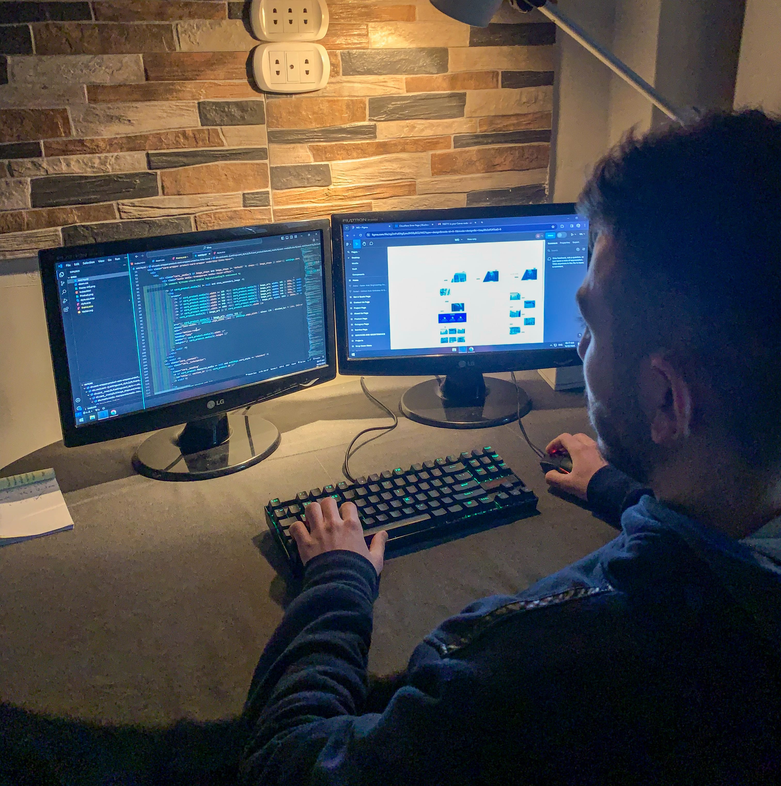

<style>
    /* Main Styles */
    .horizontal-scroll-section {
      position: relative;
      min-height: 100vh;
      width: 100%;
      overflow: hidden;
    }
  
    /* Slide container */
    .horizontal-scroll-section .slide-container {
      width: 500%;
      height: 74vh;
      display: flex;
      flex-wrap: nowrap;
      overscroll-behavior: none;
    }
    /* Individual slides */
    .horizontal-scroll-section .slide {
      border: solid 1px white;
      border-radius: 20px;
      margin-right: 20px;
      width: 20%;
      height: 64vh;
      display: flex;
      align-items: center;
      justify-content: center;
      padding: 0 1%;
      margin-top: 50px;
      box-sizing: border-box;
      position: relative;
    }
  
    /* Increased text width */
    .horizontal-scroll-section .slide-content {
      display: flex;
      width: 100%;
      max-width: 1500px; /* Increased from 1400px */
      margin: 0 auto;
      align-items: center;
      gap: 60px; /* Slightly reduced gap to give more space to text */
    }
  
    .horizontal-scroll-section .text-content {
      flex: 1.2; /* Increased from 1 to give more width to text */
      min-width: 283px; /* Ensures text has minimum width */
      max-width: 800px; /* Limits text width for readability */
    }
  
    .horizontal-scroll-section .image-content {
      flex: 1;
      position: relative;
      height: 55vh;
      max-width: 700px; /* Slightly reduced image width */
    }
  
    .horizontal-scroll-section .slide-img {
      width: 100%;
      height: 100%;
      object-fit: cover;
      border-radius: 16px;
    }
  
    /* Original section styles */
    .inner { position: relative; }
    .inner__wrapper { position: relative; }
    .content__block { position: relative; }
    .animate-in-up { opacity: 0; transform: translateY(20px); }
    .section-name { display: inline-flex; align-items: center; }
    .section-name-caption { margin-right: 10px; }
    .ph { font-style: normal; }
  
    /* Typography adjustments for wider text */
    .horizontal-scroll-section .slide .type-basic-160lh {
      font-size: 2.2rem; /* Slightly larger font */
      line-height: 1.8; /* Better line spacing */
      max-width: 100%; /* Allows text to use available width */
    }
  
    /* Mobile responsive */
    @media (max-width: 768px) {
      .horizontal-scroll-section .slide-content {
        flex-direction: column;
        gap: 30px;
        max-width: 100%;
      }
      
      .horizontal-scroll-section .text-content {
        min-width: 100%;
        max-width: 100%;
        padding: 0 20px;
      }
      
      .horizontal-scroll-section  .image-content {
        height: 40vh;
        width: 100%;
        max-width: 100%;
      }
    }
  </style>
  
  <!-- HTML Section -->
  <section id="story" class="inner inner-stack-bottom story horizontal-scroll-section">
    <div class="inner__wrapper">
      <div class="container-fluid p-0">
        <div class="row g-0">
          <div class="col-12 col-xl-2">
            <div class="inner__name">
              <div class="content__block name-block">
                <span class="section-name icon-right animate-in-up">
                  <span class="section-name-caption">Our Story</span>
                  <i class="ph ph-arrow-right"></i>
                </span>
              </div>
            </div>
          </div>
  
          <div class="col-12 col-xl-8">
            <div class="inner__content">
              <div class="content__block pre-stack-text-block">
                <div class="block__descr">
                  <h2 class="reveal-type animate-in-up">
                    How we got here.
                  </h2>
                  <p class="h2__text type-basic-160lh animate-in-up">
                    A quick journey through our beginnings and <strong>what makes ConversionUnlocked different</strong> from other agencies.
                  </p>
                </div>
              </div>
  
              <div class="slide-container">
                <!-- Slide 1 -->  
                <div class="slide">
                  <div class="slide-content">
                    <div class="text-content">
                      <h3>Hi, my name is <strong>Abdo</strong></h3>
                      <p class="type-basic-160lh">
                        I'm the CEO of ConversionUnlocked<br><br>
                        I want to tell you a very short story and take you back in time—<br><br>
                        <strong>On how we got here.</strong><br><br>
                        Let's get started.
                      </p>
                    </div>
                    <div class="image-content">
                      
                    </div>
                  </div>
                </div>
                
                <!-- Slide 2 -->
                <div class="slide">
                  <div class="slide-content">
                    <div class="text-content">
                      <h3>Oops! Maybe that was too much.</h3>
                      <p class="type-basic-160lh">
                        <em>Excuse my joking appetite.</em><br><br>
                        This is me—<strong>Passionate Abdo</strong>, the website developer.<br><br>
                        There and then where I found my passion in creating websites.
                      </p>
                    </div>
                    <div class="image-content">
                      
                    </div>
                  </div>
                </div>
                
                <!-- Slide 3 -->
                <div class="slide">
                  <div class="slide-content">
                    <div class="text-content">
                      <h3>The Early Days</h3>
                      <p class="type-basic-160lh">
                        I loved how a website can <strong>tell a story</strong> and <strong>provoke action</strong>.<br><br>
                        The cool thing is that I found this passion <strong>early on</strong>.<br><br>
                        So I quit college and went all in on websites (that was a bold move ngl).<br><br>
                        I built websites for almost every space and type at the time.
                      </p>
                    </div>
                    <div class="image-content">
                      
                    </div>
                  </div>
                </div>
                
                <!-- Slide 4 -->
                <div class="slide">
                  <div class="slide-content">
                    <div class="text-content">
                      <h3>The Birth of ConversionUnlocked</h3>
                      <p class="type-basic-160lh">
                        3 years later, I decided to build <strong>ConversionUnlocked</strong><br><br>
                        <strong>AND THIS IS WHERE OUR STORY BEGINS</strong><br><br>
                        It started off as a freelance project—my landing pages were stunning, but the business struggled ☹️<br><br>
                        I soon realized there was much more to creating an agency than just building nice-looking pages...
                      </p>
                    </div>
                    <div class="image-content">
                      
                    </div>
                  </div>
                </div>
                
                <!-- Slide 5 -->
                <div class="slide">
                  <div class="slide-content">
                    <div class="text-content">
                      <h3>Our Transformation</h3>
                      <p class="type-basic-160lh">
                        From <strong>client acquisition</strong> to <strong>customer success</strong>, I had no idea what that even meant.<br><br>
                        So I started learning from people like Alex Hormozi and Neil Patel—<br><br>
                        reading, consuming and building.<br><br>
                        After an intense 6 months, we transitioned into a <strong>profitable CRO agency</strong>,<br><br>
                        delivering high-converting landing pages and ongoing CRO support for brands like yours!
                      </p>
                    </div>
                    <div class="image-content">
                      
                    </div>
                  </div>
                </div>
              </div>
            </div>
          </div>
  
          <div class="col-12 col-xl-2"></div>
        </div>
      </div>
    </div>
  </section>
  
  <!-- JavaScript -->
  <script src="https://cdnjs.cloudflare.com/ajax/libs/gsap/3.11.4/gsap.min.js"></script>
  <script src="https://cdnjs.cloudflare.com/ajax/libs/gsap/3.11.4/ScrollTrigger.min.js"></script>
  <script>
    document.addEventListener('DOMContentLoaded', function() {
      // Register plugins
      gsap.registerPlugin(ScrollTrigger);
      
      // Select elements
      const container = document.querySelector('.slide-container');
      const slides = gsap.utils.toArray('.slide');
      const section = document.querySelector('.horizontal-scroll-section');
      
      // Calculate total width
      let totalWidth = 570;
      slides.forEach(slide => {
        totalWidth += slide.offsetWidth;
      });
      
      // ADJUST THIS VALUE TO CHANGE WHEN SCROLLING STARTS (in pixels)
      const startOffset = -130; // Starts 100px above center (negative = higher, positive = lower)
      
      // Horizontal scroll animation
      ScrollTrigger.create({
        trigger: section,
        start: () => `center ${window.innerHeight/2 + startOffset}`, // Adjustable start position
        end: () => `+=${totalWidth - window.innerWidth}`,
        pin: true,
        scrub: 1.2,
  
        onEnter: () => {
          document.body.style.overflow = 'hidden';
        },
        onLeaveBack: () => {
          document.body.style.overflow = '';
        },
        onUpdate: (self) => {
          if (self.isActive) {
            const progress = self.progress;
            gsap.to(container, {
              x: -progress * (totalWidth - window.innerWidth),
              ease: "none"
            });
          }
        }
      });
      
      // Animate in elements
      gsap.to('.animate-in-up', {
        opacity: 1,
        y: 0,
        duration: 1,
        stagger: 0.1,
        ease: 'power2.out',
        scrollTrigger: {
          trigger: section,
          start: 'top 80%'
        }
      });
    });
  </script>